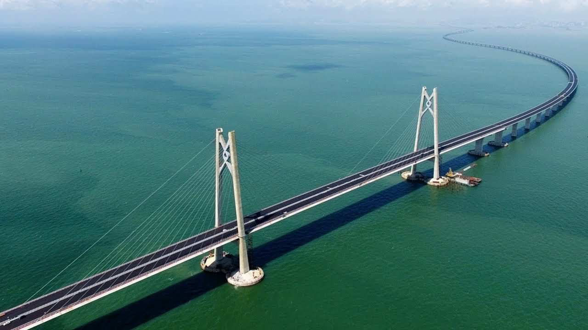
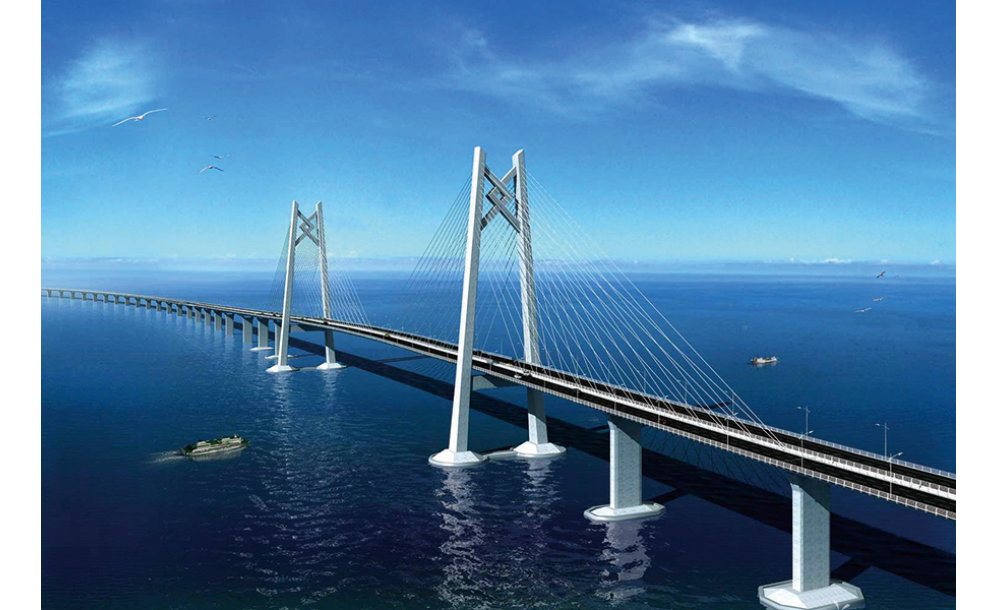

Moje top 5 i wasze propozycje |
Hongkong-Zhuhai-Makau Bridge  Most Hongkong-Zhuhai-Makau – drogowa przeprawa mostowo-tunelowa przez deltę Rzeki Perłowej, łącząca miasta Zhuhai i Makau z Hongkongiem. Długość całej przeprawy wynosi 55 km, w tym 23 km mostu głównego, 6,7 km podwodnego tunelu oraz drogi dojazdowe: 12 km od strony Honghongu i 13,4 km od strony Zhuhai.[1][2] Całość wspomagana jest sztucznymi wyspami. Na wyspie o powierzchni blisko 209 ha, usytuowanej obok portu Zhuhai, mieszczą się: centrum zarządzania mostami, służby drogowe i ratownicze oraz punkty poboru opłat. Na kolejnych dwóch sztucznych wyspach znajdują się portale tunelu głównego[3]. Na sztucznej wyspie o powierzchni 150 ha umiejscowiono przejście graniczne Hongkong (ang. Hongkong Boundary Crossing Facilities, HKBCF). Znajduje się tam odprawa ładunków i pasażerów, kontrola pojazdów, biura odpraw celnych, urząd imigracyjny, system nadzoru ruchu drogowego, itp. |